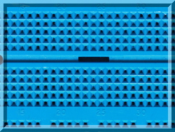
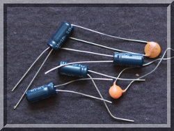
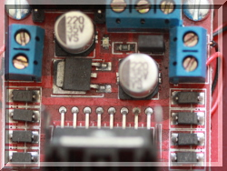

|  |  |  |
| pigpio pigpio C I/F pigpiod pigpiod C I/F Python pigs piscope Misc Examples Download FAQ Site Map | pigpio DaemonOnce launched the pigpio library runs in the background accepting commands from the pipe and socket interfaces. The pigpiod utility requires sudo privileges to launch the library but thereafter the pipe and socket commands may be issued by normal users. pigpiod accepts the following configuration options
Examplesudo pigpiod -s 2 -b 200 -fLaunch the pigpio library with a sample rate of 2 microseconds and a 200 millisecond buffer. Disable the fifo interface. Permissionspigpio provides a rudimentary permissions system for commands issued via the socket and pipe interfaces.All GPIO may be read. Only the user GPIO for the board type or those specified by the -x option may be updated. Type 1 boards 0x03E6CF93 (26 pin header)In this context an update includes the following: GPIO mode set GPIO pull/up down GPIO write GPIO set PWM (including range and frequency) GPIO set servo In addition the bank clear and set commands, and the wave commands will only affect updateable GPIO. ExceptionsThe following exceptions are made for particular models.Models A and B The green activity LED (GPIO 16) may be written. Models A+ and B+ The green activity LED (GPIO 47) may be written. The red power LED (GPIO 35) may be written. The high USB power mode (GPIO 38) may be written. Pi Zero The green activity LED (GPIO 47) may be written. Pi2B The green activity LED (GPIO 47) may be written. The red power LED (GPIO 35) may be written. The high USB power mode (GPIO 38) may be written. Pi3B The green activity LED and the red power LED are not writable. The USB power mode is fixed at 1.2 amps (high power). DMA ChannelsThe secondary channel is only used for the transmission of waves.If possible use one of channels 0 to 6 for the secondary channel (a full channel). A full channel only requires one DMA control block regardless of the length of a pulse delay. Channels 7 to 14 (lite channels) require one DMA control block for each 16383 microseconds of delay. I.e. a 10 second pulse delay requires one control block on a full channel and 611 control blocks on a lite channel. |
[pigpio]
[pigpio C I/F]
[pigpiod]
[pigpiod C I/F]
[Python]
[pigs]
[piscope]
[Misc]
[Examples]
[Download]
[FAQ]
[Site Map]
© 2012-2020 |
e-mail: pigpio @ abyz.me.uk |
Updated: 30/04/2020 |